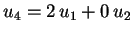
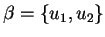
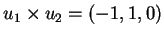
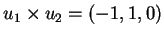
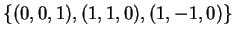
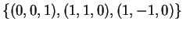
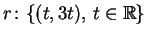
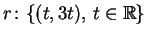
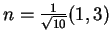
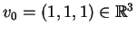

1)
Considere os vetores
Resposta:
Como os vetores u1 e u2 não são paralelos (proporcionais) eles são linearmente independentes.
O vetor u3 é combinação linear de u1 e u2.
Isto pode ser verificado de duas formas. Veja que o determinante
com linhas as coordenadas dos vetores u1, u2 e u3 é nulo.
Ou escreva
Obviamente o vetor u4 é combinação linear de u1 e u2( ).
Portanto, uma base é .
Para determinar
 determinamos a equação cartesiana
de V. Como V é um plano e seu vetor normal é

a equação cartesiana é x-y=0. Por exemplo,
(0,0,1) e (1,1,0) formam uma base ortogonal de V.
determinamos a equação cartesiana
de V. Como V é um plano e seu vetor normal é

a equação cartesiana é x-y=0. Por exemplo,
(0,0,1) e (1,1,0) formam uma base ortogonal de V.
A base
já esta determinada
(é suficiente acrescentar o vetor normal do plano à base
 )
.
)
.
Como 2-2=0, o vetor (2,2,4) verifica a equação cartesiana de V, logo está em V.
Fazemos,
2)
Considere as transformações lineares
Resposta:
Temos
T(1,0)=(1,2),
T(0,1)=(3,4),
S(1,0)=(5,6)e
S(0,1)=(7,8).
Logo
De forma análoga temos,
3)
Considere a transformação linear
 definida como a projeção ortogonal na reta
.
definida como a projeção ortogonal na reta
.
Resposta:
Temos que

é um vetor normal unitário da reta
de projeção.
Logo
Finalmente, para calcular T(1,3) e T(-3,1) temos duas possibilidades, ou aplicamos a matriz ou vemos que, como (1,3) é o vetor diretor da reta onde projetamos, então T(1,3)=(1,3), e que, como (-3,1) é o vetor normal da reta, temos T(-3,1)=(0,0).
4)
Considere o vetor

e defina a transformação linear
Resposta:
0 conjunto dos vetores
v tais que T(v)=0são os vetores paralelos a v0. Ou seja os vetores da forma
(t,t,t),
 .
.
Não existe nenhum vetor v tal que T(v)=v0, pois T(v) é sempre ortogonal a v0.
Não existe nenhum vetor não nulo v tal que T(v)=v, pois
T(v) é sempre ortogonal a v.
Obviamente, o caso trivial trivial v=0 verifica T(v)=0.
Temos
A matriz T não é inversível. Isto pode ser visto de duas formas diferentes. Ou calculando seu determinante e vendo que é zero. Ou vendo que T não é injetiva ( T(1,1,1)=T(0,0,0)=(0,0,0)), e portanto não tem inversa.